A self-hosted, open-source alternative to Obsidian, with publishing built in.
publish: true to a note to make it public. Topics, RSS, comments. Unmarked notes stay private.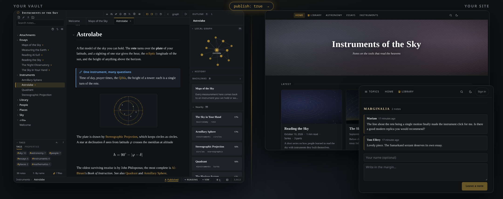
publish: true and it is on your blog, with RSS, comments and scheduled posts. No subscription.Five of the 21 signature designs. Each takes the site's theme colours and can be copied and rearranged in the designer.
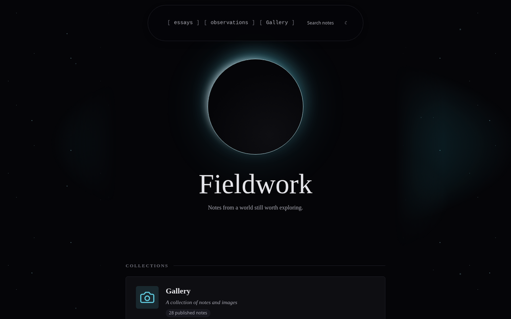
Deep FieldAn eclipse above the fold, a floating dock, stories suspended in a deep stellar field.
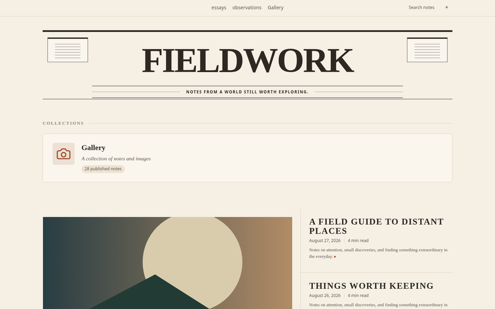
Late EditionA broadsheet nameplate, a dateline strip, one lead across two columns.
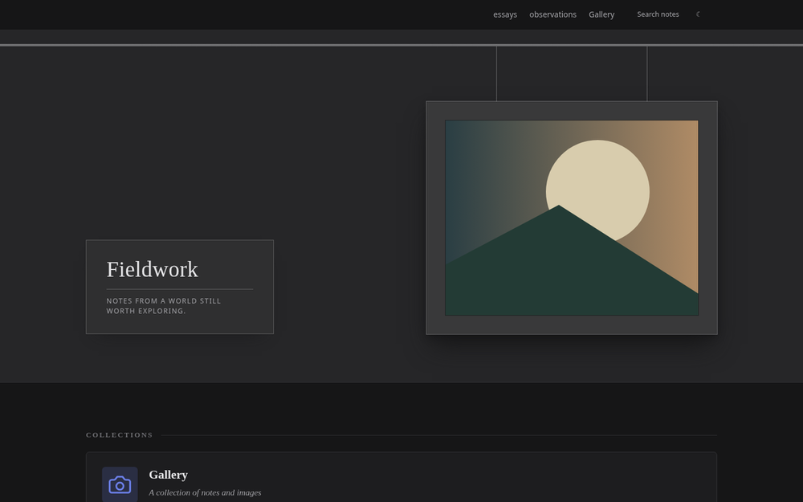
VernissageA museum wall, the newest piece hung on wires beside its label.
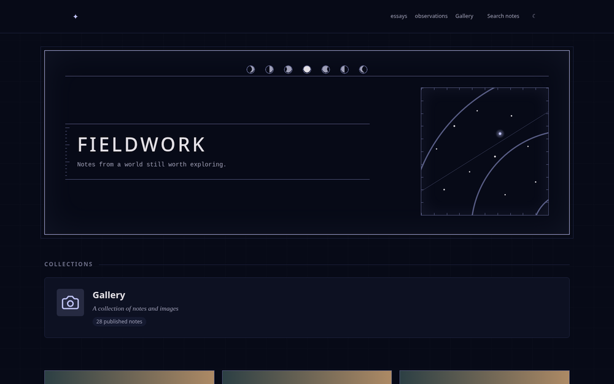
EphemerisA register of the night: moon phases across the top, a star chart at the end.
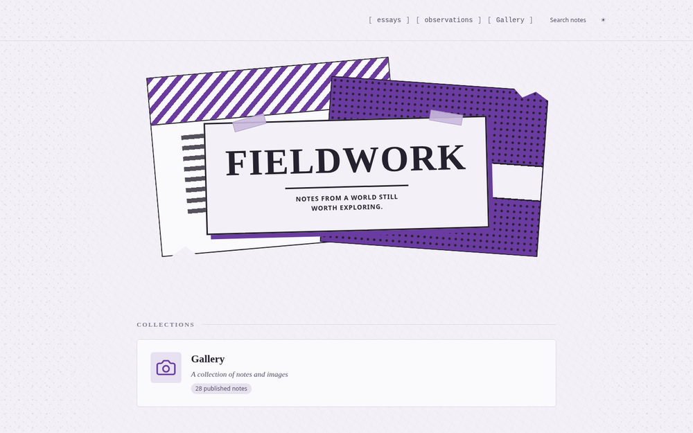
FlypostBills pasted over bills, torn corners, the name across the top one.
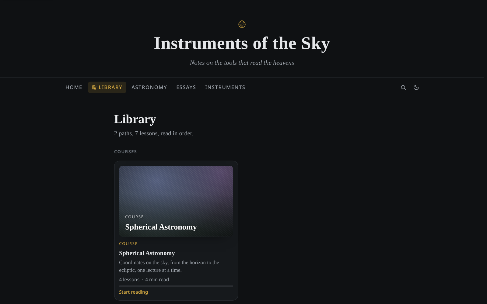
Right-click a folder and put it on the shelf as a book, a course or a series. Its subfolders become chapters and its published notes lessons. Readers get a contents list, their place kept, and the arrow keys to move between lessons.
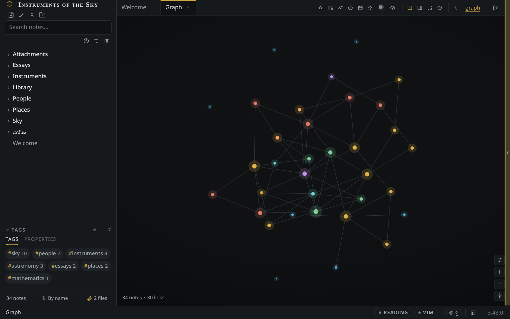
Every wikilink as an edge. Colour notes by folder, tag or link count, hide unlinked notes, find a note, and adjust the forces. It stays responsive with thousands of notes.
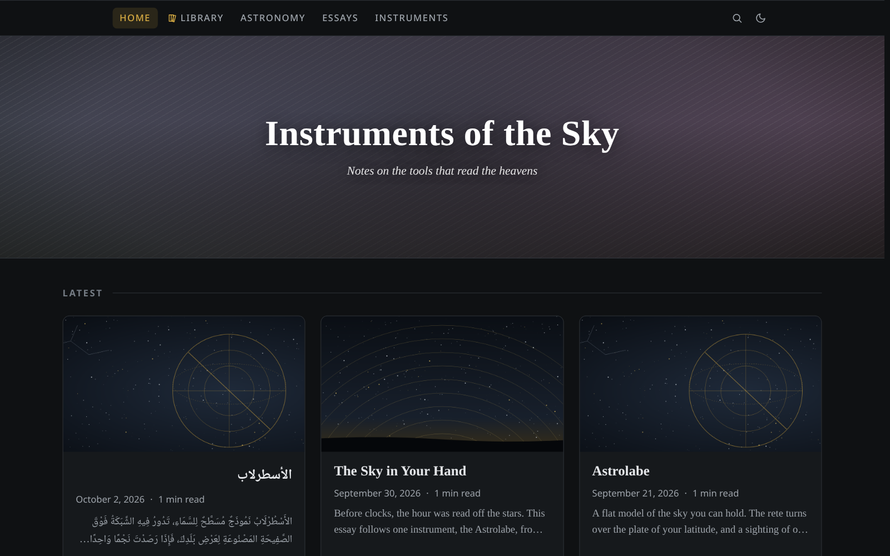
A masthead, a topic bar built from your tags, a home page of posts and a shelf for the library. RSS, a sitemap, meta tags rendered on the server, and reader comments that wait for your approval.
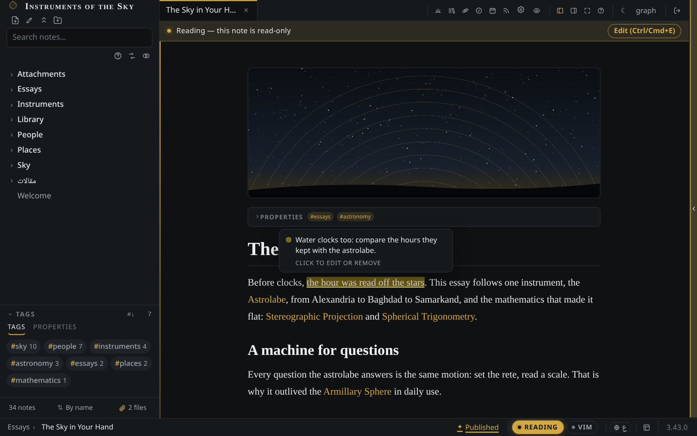
Select a passage and write a note on it. Annotations are stored beside the vault and anchored to the quoted text, so they survive edits to the note. Keep them private or show them to readers.
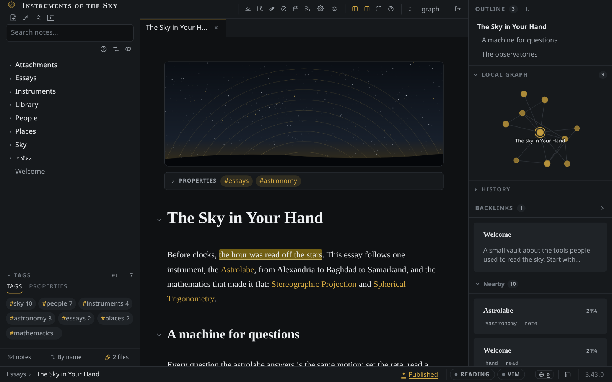
CodeMirror 6 with live preview, wikilinks with autocomplete, backlinks, transclusions, callouts, KaTeX, a command palette and vim mode. A PDF and EPUB reader whose highlights become cited notes. Right-to-left text (Arabic, Persian, Hebrew) edits natively beside English.
The server needs Node 24 or later. Then open http://localhost:6801. Notes stay ordinary files in the folder.
# run from source git clone https://github.com/ZahakJ/astrolabe.git && cd astrolabe && npm install && npm start # use an existing folder of notes ASTROLABE_VAULT=~/notes npm start # set an admin password before publishing npm run hash-password # → ADMIN_PASSWORD_HASH in .env
Desktop and Android builds, from the latest release: